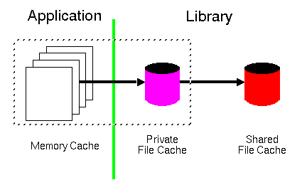

Caching is a required part of any efficient Internet access applications as it saves bandwidth and improves access performance significantly in almost all types of accesses. This sections describes the architecture behind the cache management in the Library. The cache management is intended to be used both as a proxy cache and a client cache or simply as a cache relay. It does not include the interaction between an application and a proxy server as this is regarded as an external access and hence outside the scope of the local cache. The basic structure of the cache is illustrated in the figure below.

The figure described the cache hierarchy starting from left to right; it does not describe the data flow. Any of the three cache handlers can be left out in which case a cache request will fall through to the next handler in the hierarchy and finally be passed to the protocol manager which issues a request to either the origin server, a proxy server, or a gateway. Any of the handlers can also be short circuited by using a set of cache directives which are explained in the User's Guide. In the following, each part will be described in more detail.
The memory cache is completely handled by the application and is only consulted by the Library when servicing a request. It is considered private to a specific instance of an application and is not intended to be shared between instances. Handling the memory cache includes the following tasks: object storage, garbage collection, and object retrieval. The application can initiate a memory cache handler by registering a call back function that is called from within the Library on each request. The details of this registration is described in the User's Guide.
Traditionally, the memory cache is based on handling the graphic objects
described by the HyperDoc object in memory as the user keeps
requesting new documents. The HyperDoc object is only declared
in the Library - the real definition is left to the application as it is
for the application to handle graphic objects. For example, the Line Mode
Browser has its own definition of the HyperDoc object called
HText which
describes a fully parsed HTML object with enough information to display itself
to the user. However, the memory cache handler can handle other objects than
HTML, for example images, audio clips etc. It is important to note that the
Library does not imply any limitations on the usage of the memory cache.
The memory cache must define its own garbage collection algorithm which can be based on available memory etc. Again, the Line Mode Browser has a very simple memory management of how long objects stay around in memory. It is determined by a constant in the GridText module and is by default set to 5 documents. This approach can be much more advanced and the memory garbage collection can be determined by the size of the graphic objects, when they expire etc. but the API is the same no matter how the garbage collector is implemented.
The private file cache is to be regarded as a direct extension of the memory cache as intended for intermediate term storage of data objects. As the memory cache, it is intended to be private to a single instance of an application as long as the instance is running. However, as a file cache is persistent, it can be shared between several instances of various applications as long as exactly one instance owns the private cache at any one time. The single ownership of a private cache means that the cache can be accessed via the local file system by one instance of an application only.
There are two purposes of the private file cache:
Often an important difference between the memory cache and the file cache is the format of the data. As mentioned above, in the memory cache, the cached objects can be pre-parsed objects ready to be displayed to the user. In a file cache the data objects are always stored along with their metainformation so that important header information like Expires, Last-Modified, Language etc. is a part of the stored object together with any unknown metainformation that might be a part of the object.
A shared file cache which can be accessed by several independent applications requires its own cache manager in order to ensure a consistent cache and to handle garbage collection. A shared file cache can in many ways be regarded as similar to a proxy cache as a single application do not know when a cached object is either discarded or refreshed in the shared cache area.
If a shared cache manager does exist then the only remaining purpose of a private file cache is to store explicitly private objects. All other objects will be stored in the shared cache.
As for the private file cache, the data objects are always stored along with their metainformation so that any metainformation associated with an object can be returned to the requesting application.
@(#) $Id$